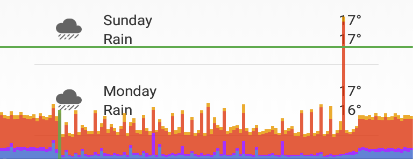
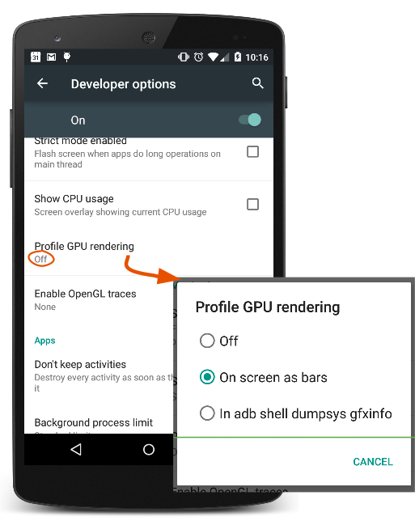
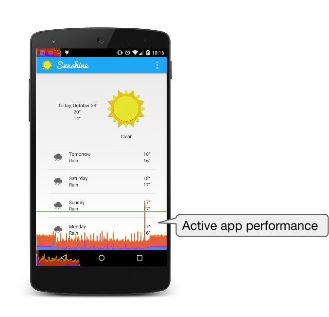
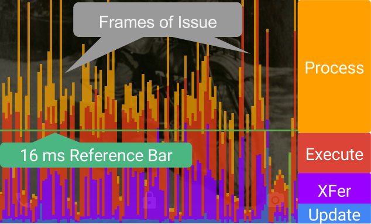

If your app is slow, it is because some or all frames take more than 16 milliseconds to execute. A direct and easy way to visualize the rendering speed of each frame is by turning on Profile GPU Rendering on your mobile device.
This walkthrough shows how to use Profile GPU Rendering on your mobile device.
Profiling GPU Rendering gives you a quick visual representation of how much time it takes to render the frames of a UI window relative to the 16-ms-per-frame benchmark.

Profiling GPU Rendering is useful for:
Quickly seeing how a UI window performs against the 16-ms-per-frame target.
Identifying whether any part of the rendering pipeline stands out in using up processing time.
Looking for spikes in frame rendering time associated with user or program actions.
What You Need
A mobile device running at least Android 4.1 with Developer Options enabled.
Open Developer options in the system Settings. On Android 4.2 and higher, the Developer options screen is hidden by default. To make it visible, go to Settings > About phone and tap Build number seven times. Return to the previous screen to find Developer options at the bottom.
What You’ll Learn
How to enable Profile GPU Rendering on your mobile device.
How to interpret the graphs drawn by Profile GPU Rendering.
On your mobile device, go to Settings > Developer Options.
Scroll far down and tap Profile GPU Rendering to turn it On.
In the Profile GPU Rendering popup, choose On screen as bars, to overlay the graphs on the screen of your mobile device.
Go to the app that you want to profile. (This will work for any app on your device.)

Open an app on your device and interact with it.
For each visible Activity, the tool displays a graph.
The horizontal axis shows time elapsing.
The vertical axis shows time per frame in milliseconds.
As you interact with your application, vertical bars show up on your screen, appearing from left to right, showing frame performance over time.
Each vertical bar represents one frame of rendering. The taller the bar, the longer it took to render.
The green line marks the 16 ms per frame target. Every time a bar crosses the green line, your app is dripping a frame, and your users may see this as stuttering motion.

The Profile GPU Rendering Graph

In this enlarged image of the Profile GPU Rendering graph you can see the colored sections of the graph, and what phase of the rendering pipeline each color represents.
The green line represents 16 ms. To achieve 60 fps, the vertical bar for each frame needs to stay below this 16 ms mark. Any time a bar pushes above this line, there may be pauses in the animations.
Each bar has a blue, purple (only for Lollipop and newer Android versions), red, and orange component.
The blue section of the bar represents the time used to create and update the View's display lists. If this part of the bar is large, there may be a lot of custom view drawing or a lot of work in onDraw methods.
(Lollipop and newer Android OS) The purple section of the bar represents the time spent transferring resources to the render thread.
The red section of the bar represents the time spent by Android's 2D renderer issuing commands to OpenGL to draw and redraw display lists. The height of this bar is directly proportional to the time it takes to execute all display lists.
The orange section of the bar represents the time the CPU is waiting for the GPU to finish its work. If this bar gets large, it means the app is doing too much work on the GPU.
Once you identify where your app is missing the 16 ms-per-frame mark, you can use other Android Performance Profiling Tools to figure out, where exactly in your code the problem is, and fix it.
In fact, we have created a whole Udacity course to help you learn about Android Performance, the profiling tools, and how to fix common issues.